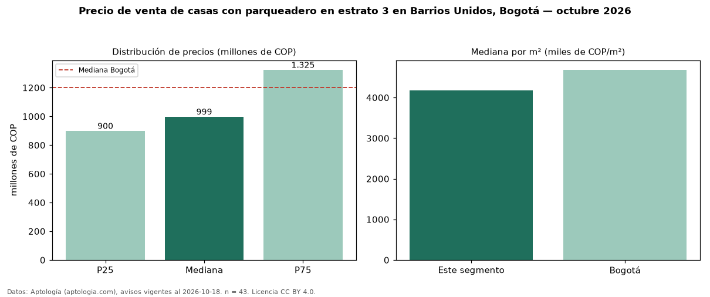

Precio de venta de casas con parqueadero en estrato 3 en Barrios Unidos, Bogotá — octubre 2026
COP 999 millones es el precio mediano de casas con parqueadero en estrato 3 en venta en Barrios Unidos, Bogotá (n = 43 avisos). Eso es 5 % más que la mediana de las casas en estrato 3 en venta de Barrios Unidos (COP 950 millones, n = 69); este segmento reúne el 62 % de esos avisos. Por metro cuadrado, la mediana es COP 4,18 millones/m² (n = 43), 5 % por encima de las casas en estrato 3 en venta de Barrios Unidos (COP 4,00 millones/m²). El área mediana anunciada es 263 m². El segmento con más oferta es el de 3 o más habitaciones (42 avisos, mediana COP 1.000 millones). La mediana de todas las casas en venta de Bogotá es COP 1,20 mil millones (−17 % de diferencia). La mitad central de los avisos va de COP 900 millones a COP 1,32 mil millones (razón 1,5), una dispersión moderada. Datos: Aptología (aptologia.com), CC BY 4.0 — https://www.aptologia.com/casas-en-venta/bogota/barrios-unidos. Archivos: PDF, CSV con las cifras y gráfica PNG.

| Avisos únicos | 43 |
|---|---|
| Percentil 25 | COP 900.000.000 |
| Mediana | COP 999.000.000 |
| Percentil 75 | COP 1.325.000.000 |
| Mediana por m² | COP 4.182.509 |
Fuente: avisos vigentes de portales inmobiliarios recopilados por Aptología, deduplicados (mínimo 30 avisos únicos por celda). Precios pedidos, no cerrados. Fecha: 2026-10-18.